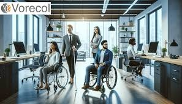

"Jovens e a Tecnologia".
"Jovens e adolescentes estão moldando o futuro, conectados pela tecnologia e desbravando um mundo de possibilidades sem limites."
"Jovens transformando seu futuro, impulsionados pelas aulas de tecnologia oferecidas pelo governo, abrindo portas para novas oportunidades e sonhos."
*Descobrindo a Tecnologia: Um Mundo de Oportunidades para Jovens* A tecnologia está moldando o futuro e, mais do que nunca, é essencial que os jovens estejam preparados para aproveitar as infinitas oportunidades que esse universo oferece. Se você é um jovem curioso, apaixonado por aprender e com vontade de explorar novas fronteiras, este é o lugar certo para você! Através da tecnologia, você pode se tornar o criador, o inovador e o líder de amanhã. Desde programar seu próprio aplicativo até entender os algoritmos que movimentam o mundo digital, as possibilidades são ilimitadas. E o melhor de tudo? Você não precisa ser um expert para começar. Todos nós começamos de algum lugar, e a jornada para entender como a tecnologia funciona é emocionante, desafiadora e cheia de descobertas. *O que você vai encontrar aqui?* - *Cursos e Tutoriais:* Conteúdo feito especialmente para você, com linguagem simples e objetiva. Desde o básico até conceitos mais avançados, com uma abordagem prática para que você possa colocar a mão na massa. - *Histórias de Jovens Inspiradores:* Conheça histórias de jovens que, como você, começaram do zero e hoje são referência no mundo da tecnologia. Inspire-se em suas trajetórias e veja que o impossível é apenas uma questão de dedicação e paixão. - *Ferramentas e Recursos:* Acesso a plataformas, softwares e ferramentas que os profissionais de tecnologia usam todos os dias. Aqui, você terá tudo o que precisa para dar os primeiros passos e começar a criar. - *Desafios e Competências:* Participe de desafios tecnológicos que vão testar e expandir seus conhecimentos, enquanto você ganha habilidades valiosas para o mercado de trabalho. A jornada para dominar a tecnologia pode começar com algo simples, como aprender a codificar ou explorar como a inteligência artificial funciona. Cada passo dado é uma conquista, e a cada novo aprendizado, você vai se aproximando mais do futuro que deseja construir. *O futuro é agora!* Não deixe para amanhã a descoberta do mundo digital que pode transformar sua vida. Junte-se a uma comunidade de jovens que estão aprendendo, criando e inovando todos os dias. A tecnologia não tem limites, e você também não precisa ter!
"Jovens de comunidades que tiveram acesso à tecnologia nas escolas mudaram seus futuros e alcançaram o sucesso."
A tecnologia tem se mostrado uma força transformadora para muitos jovens ao redor do mundo. Através dela, inúmeros adolescentes e jovens adultos superaram barreiras como a falta de oportunidades, dificuldades financeiras, e até limitações geográficas. Aqui, apresentamos um levantamento sobre jovens que encontraram na tecnologia uma maneira de mudar suas vidas e de suas comunidades, superando desafios significativos.
O Impacto da Educação em Tecnologia para Comunidades Carentes*
Essas escolas e programas têm um impacto profundo na vida de jovens de comunidades carentes, fornecendo-lhes as habilidades e o conhecimento necessários para transformar seu futuro. O acesso a cursos de tecnologia, programação e outras habilidades digitais não só melhora as oportunidades de emprego, mas também permite que esses jovens se tornem agentes de mudança em suas próprias comunidades. Investir em educação tecnológica para as comunidades periféricas é uma forma eficaz de quebrar o ciclo de pobreza e criar oportunidades que antes pareciam impossíveis. Organizações como essas estão desempenhando um papel crucial na criação de um mundo mais inclusivo, onde a tecnologia não é apenas para alguns, mas para todos.
"Desperte seu potencial! As aulas de tecnologia são a chave para um futuro cheio de possibilidades, onde você pode criar, inovar e transformar o mundo ao seu redor!"
- Acesso ao Conhecimento: A tecnologia permite que os jovens acessem uma infinidade de informações e recursos educacionais online, tornando o aprendizado mais dinâmico e acessível a qualquer hora e em qualquer lugar.
- Desenvolvimento de Habilidades: Ferramentas digitais e plataformas de aprendizado ajudam os jovens a desenvolver habilidades essenciais, como programação, design, e comunicação digital, preparando-os para o mercado de trabalho do futuro.
- Conexão e Colaboração: A tecnologia permite que os jovens se conectem com pessoas do mundo todo, ampliando suas redes de contatos, colaborando em projetos globais e compartilhando ideias e experiências.
"Assista ao vídeo e descubra como a tecnologia vem transformando seu futuro e gerando oportunidades incríveis, graças ao poder da tecnologia jovens tem transformado futuros!"
Histórias de Jovens que Superaram Desafios Graças à Tecnologia*
Ana, de 19 anos – Rio de Janeiro, Brasil*
Ana cresceu em uma comunidade carente, com acesso limitado à educação de qualidade e poucas perspectivas de futuro. Sua vida começou a mudar quando ela teve acesso a um curso online de programação oferecido por uma ONG. Apesar das dificuldades de conexão à internet e da escassez de recursos, Ana se dedicou intensamente aos estudos. Após seis meses, ela conquistou sua primeira vaga de estágio em uma empresa de tecnologia e, hoje, trabalha como desenvolvedora júnior. Ana não apenas mudou sua própria vida, mas também inspira outras jovens da comunidade a seguir seus passos. *Impacto:* - Superação da falta de recursos financeiros. - Conquista de uma carreira no setor de tecnologia. - Inspiração para outros jovens da comunidade.
Lucas, 22 anos – Amazonas, Brasil*
Lucas vive em uma região remota da Amazônia, onde a educação formal de qualidade é escassa, e as opções de trabalho são limitadas. Ele sempre teve interesse por computadores, mas a falta de acesso a cursos e a internet dificultavam seu aprendizado. Quando a escola local implementou uma parceria com uma plataforma de cursos online, Lucas aproveitou a oportunidade. Ele aprendeu a programar e, com o tempo, começou a desenvolver aplicativos voltados para o meio ambiente e a sustentabilidade local. Atualmente, Lucas é contratado por uma startup que desenvolve soluções tecnológicas para a preservação da natureza. *Impacto:* - Superação das barreiras de acesso à educação em áreas rurais. - Criação de soluções tecnológicas voltadas para o meio ambiente. - Desenvolvimento de uma carreira em uma startup inovadora.
Acessibilidade Você sabe oque é
Click ao lado ->
1. O que é acessibilidade?
Acessibilidade é a prática de tornar produtos, serviços, ambientes e informações acessíveis a todas as pessoas, independentemente de suas condições físicas ou cognitivas. O objetivo é garantir que pessoas com deficiência possam participar plenamente da sociedade.
2. Quais são os tipos principais de deficiência abordados pela acessibilidade?
Acessibilidade abrange diversas deficiências, incluindo: Deficiência visual (cegueira ou baixa visão) Deficiência auditiva (surdez ou dificuldades auditivas) Deficiência motora (dificuldade de mobilidade ou uso de cadeira de rodas) Deficiência cognitiva (dificuldades de aprendizagem ou compreensão) Deficiência psicossocial (transtornos mentais e emocionais)
3. O que são tecnologias assistivas?
Tecnologias assistivas são dispositivos, softwares e equipamentos que ajudam a superar barreiras impostas pela deficiência. Exemplos incluem leitores de tela para deficientes visuais, intérpretes de libras para deficientes auditivos, e softwares de leitura de texto para pessoas com dificuldades de aprendizagem.
4. Como as empresas podem melhorar a acessibilidade em seus processos de recrutamento e no ambiente de trabalho??
As empresas podem melhorar a acessibilidade em seus processos de recrutamento e no ambiente de trabalho oferecendo formatos alternativos para anúncios de vagas, adaptando espaços físicos e fornecendo tecnologias assistivas. Além disso, é importante treinar recrutadores e garantir que o ambiente seja inclusivo para pessoas com diferentes tipos de deficiência.
5. Quer explorar mais sobre este universo?
Descubra o fascinante mundo da acessibilidade! Clique no botão abaixo e conheça mais sobre como tornar o ambiente mais inclusivo para todos."
"Jovens com Acessibilidade conquistando o mercado de Trabalho!"
A tecnologia assistiva é uma das maiores revoluções do nosso tempo, criando oportunidades e oferecendo soluções que transformam vidas de pessoas com deficiências. Ela vai além da inovação tecnológica, tocando diretamente a inclusão e a autonomia, permitindo que cada indivíduo tenha acesso a um mundo sem barreiras. Com dispositivos e sistemas criados especialmente para atender às necessidades específicas de quem enfrenta desafios físicos ou cognitivos, a tecnologia assistiva empodera, devolve a independência e amplia as possibilidades de participação ativa na sociedade. Desde softwares de leitura para deficientes visuais até próteses avançadas que proporcionam mobilidade e autonomia, a tecnologia assistiva é um exemplo claro de como a inovação pode ser aliada do ser humano, não apenas para facilitar, mas para ampliar suas capacidades. Ela quebra as limitações impostas pela deficiência e abre um leque infinito de possibilidades, permitindo que pessoas com diferentes necessidades vivam de maneira mais plena e integrada ao seu ambiente. O mais maravilhoso da tecnologia assistiva é que ela não só melhora a qualidade de vida, mas também oferece dignidade e respeito à diversidade humana. Cada avanço tecnológico nessa área representa um passo para uma sociedade mais justa, onde todos têm acesso às mesmas oportunidades e a liberdade de expressar todo o seu potencial. A tecnologia assistiva é um exemplo brilhante de como a inovação pode mudar o mundo, tornando-o mais inclusivo, acessível e humano. É um lembrete poderoso de que a verdadeira evolução da tecnologia não está apenas em criar novas invenções, mas em garantir que todos possam fazer parte dessa evolução, sem exceções.

Maria, 20 anos – São Paulo, Brasil
Maria tem paralisia cerebral e sempre enfrentou dificuldades de mobilidade e comunicação. Apesar disso, ela sempre foi apaixonada por tecnologia. Participou de programas de inclusão digital e aprendeu a programar com softwares de fácil acesso. Usando suas habilidades, Maria desenvolveu um site de apoio para pessoas com deficiência, oferecendo recursos, fóruns e dicas de como melhorar a qualidade de vida por meio de tecnologias assistivas. Hoje, ela é uma defensora da inclusão digital e trabalha com a criação de aplicativos voltados para a acessibilidade.
*Superação*
Superação das limitações físicas e da falta de acessibilidade.
Criação de soluções digitais para pessoas com deficiência.
Conquista de visibilidade e respeito na comunidade de tecnologia.
"Aluno do projeto Avançatech fornecido no Centro de formação Cultural Cidade Tiradentes"

Sobre William Henrique Lima Santos
Meu nome é William Henrique Lima Santos, tenho 31 anos e sou estudante dos cursos oferecidos pelo Centro Cultural, com grande apoio do programa Avança Tech, que tem sido fundamental para meu desenvolvimento pessoal, especialmente na área de tecnologia. Esse programa tem me proporcionado as ferramentas necessárias para expandir meus conhecimentos em informática, algo que é essencial para o meu crescimento profissional.
Sou deficiente físico, tendo nascido com paralisia cerebral, o que afetou parte do meu cérebro e, consequentemente, provocou dificuldades de aprendizagem. Além disso, meu lado direito apresenta limitações de articulação na mão. Desde pequeno, enfrentei desafios consideráveis, mas com a ajuda de programas de capacitação como o Avança Tech, tenho conseguido superar barreiras e aprimorar minhas habilidades, especialmente no uso de computadores.
Através deste curso, tenho buscado aprimorar meus conhecimentos em programação, com o objetivo de me capacitar cada vez mais para o mercado de trabalho. Acredito que a educação tecnológica é uma das chaves para alcançar meus objetivos e realizar meus sonhos, possibilitando-me contribuir com soluções inovadoras, independentemente das dificuldades que enfrento.
Ao desenvolver este site, espero também transmitir uma mensagem importante para as empresas: a inclusão de pessoas com deficiência no ambiente de trabalho é fundamental. Todos nós, com ou sem deficiência, enfrentamos obstáculos, e a tecnologia desempenha um papel crucial na superação desses desafios. O avanço tecnológico permite a criação de um ambiente mais igualitário, no qual as habilidades e o potencial de cada indivíduo sejam reconhecidos, independentemente das limitações físicas.
Com perseverança, capacitação e o apoio de programas como o Avança Tech, acredito que posso não só alcançar meus objetivos, mas também contribuir para um mundo mais inclusivo e acessível.
Estatísticas sobre pessoas com deficiência no mercado de trabalho e na tecnologia
Aqui estão algumas estatísticas sobre pessoas com deficiência no mercado de trabalho e na tecnologia:
- Em 2022, a taxa de participação da força de trabalho entre pessoas com deficiência foi de 29,2%, enquanto entre pessoas sem deficiência foi de 66,4%.
- De acordo com uma pesquisa da Relevo, em 2021, apenas 1,6% dos convites para processos seletivos em empresas de TI foram para pessoas com deficiência.
- Em 2019, a taxa de formalização no mercado de trabalho para pessoas com deficiência foi de 34,3%, enquanto para pessoas sem deficiência foi de 50,9%.
- Em 2024, o levantamento do eSocial apontou que havia 545,9 mil trabalhadores com deficiência no mercado de trabalho brasileiro.
- As pessoas com deficiência enfrentam diversos obstáculos para se inserirem no mercado de trabalho, como preconceito, pouca acessibilidade e inadaptação dos espaços.

Obstáculos e desafios no mercado de trabalho para pessoas com deficiência.

Participação de pessoas com deficiência nas ocupações e no setor tecnológico.
Porcentagens de trabalhadores com Acessibilidade nas empresas

No Brasil, cerca de 6,7% da população em idade de trabalhar tem alguma deficiência, mas a inclusão no mercado de trabalho ainda é um grande desafio. Embora algumas empresas já tenham implantado políticas de acessibilidade, apenas 1 em cada 4 pessoas com deficiência está efetivamente empregada. Isso representa cerca de 25% dessa população, o que destaca a necessidade de mais ações para promover a inclusão de todos no ambiente de trabalho. A implementação de adaptações no local de trabalho e o uso de tecnologias assistivas são passos essenciais para garantir que 100% das pessoas com deficiência tenham a oportunidade de contribuir com seu talento e habilidades nas empresas.
Leis de Acessibilidade no Brasil
Lei Brasileira de Inclusão (Lei nº 13.146/2015)Lei nº 13.146/2015: A Lei Brasileira de Inclusão (LBI) garante os direitos das pessoas com deficiência, promovendo a igualdade de oportunidades e a eliminação de barreiras para a inclusão social, garantindo acessibilidade em espaços públicos e privados, educação, saúde e outros serviços essenciais.
Lei nº 10.098/2000: Regula as condições de acessibilidade para pessoas com deficiência, especialmente no que se refere à adaptação de espaços urbanos e edificações, garantindo o acesso à mobilidade e à comunicação.
Decreto nº 5.296/2004: Regulamenta a Lei nº 10.098/2000, estabelecendo normas técnicas para a adaptação de edificações, transporte público e serviços de comunicação, com o objetivo de garantir a acessibilidade de pessoas com deficiência.
Lei nº 12.764/2012: Estabelece a Política Nacional de Proteção dos Direitos da Pessoa com Transtorno do Espectro Autista (TEA), garantindo direitos de acesso à educação, saúde, e serviços sociais, além de promover a inclusão social das pessoas autistas.
Portaria nº 4.280/2003: Regula a acessibilidade no ambiente urbano, garantindo a eliminação de barreiras arquitetônicas e a promoção de espaços públicos acessíveis, como calçadas, rampas, e transporte público.
Portaria nº 3.042/2003: Estabelece normas de acessibilidade para o transporte público, exigindo adaptações em ônibus, trens e outros meios de transporte, com foco em cadeirantes e pessoas com mobilidade reduzida.
Portaria nº 1.802/2006: Regula a acessibilidade no âmbito educacional, garantindo que escolas e universidades ofereçam adaptações para alunos com deficiência, como materiais em braille, intérpretes de libras e outros recursos.
Portaria nº 5.539/2013: Estabelece diretrizes para garantir a acessibilidade nos serviços de saúde, com a adaptação de unidades de saúde e a capacitação de profissionais para o atendimento a pessoas com deficiência.
Portaria nº 1.254/2017: Foca na implementação da política nacional de inclusão para pessoas com deficiência, incentivando a cooperação entre órgãos públicos e privados para promover a acessibilidade e a igualdade de direitos.
*Criadores deste Site**
No projeto Avançatech, aprendemos a transformar o conhecimento em resultados, alcançando nossos objetivos e traçando um novo futuro através da programação!
Cesar Cavalcanti
Aluno DesenvolvedorWilliam Santos
Aluno Desenvolvedor*** Nossos Agradecimentos***
Agradecemos ao Projeto Avançatech e a todos os colaboradores que fizeram e fazem parte desse grande trabalho de inclusão, aos alunos deste curso e, principalmente, ao professor Thiago Menezes, que sempre nos deu suporte, permitindo que a cada dia possamos crescer e nos tornar não apenas profissionais de excelência, mas também seres humanos melhores.